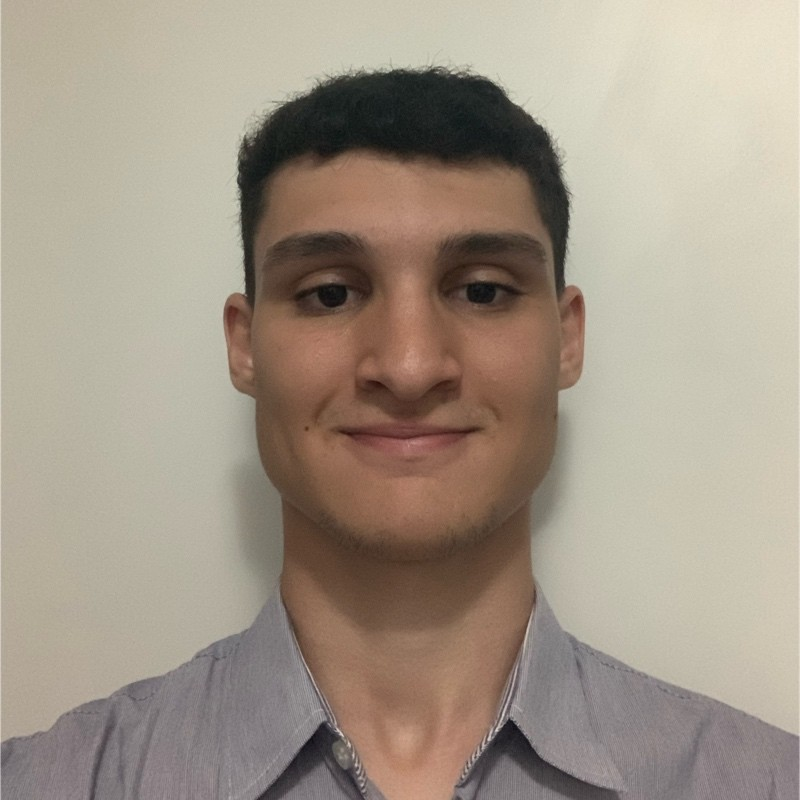

Estudante de Engenharia da Computação na Universidade Senai Cimatec, organizador das iniciativas Clube de Programação e Clube de Cyber.
Foco de estudo, desenvolvimento e pesquisa:
Segurança da Informação e Cibersegurança: Fundamentos de sistemas operacionais, segurança de redes, análise de vulnerabilidades e resolução de desafios práticos em CTFs (Capture The Flag).
Redes de Computadores: Arquitetura de protocolos, comunicação cliente-servidor, roteamento, infraestrutura e conectividade de sistemas.
Pesquisa Científica: Participação em projetos de iniciação científica e publicações voltadas para inovação tecnológica.
Nível: Graduação
Área: Engenharia da Computação
Instituição: Universidade SENAI CIMATEC
Período: 2024-2029
Cargo: Estagiário do Curso de Engenharia da Computação
Instituição: Universidade SENAI CIMATEC
Período: Abr de 2025 – Abr de 2026
Descrição: Apoiou ações do curso, como gerenciamento de iniciativas, organizadoção de eventos e análise de dados.
Cargo: Aluno Pesquisador
Instituição: Universidade SENAI CIMATEC
Período: Nov de 2024 – Dez de 2025
Descrição: Participou do projeto de pesquisa "Systematic Review of Computational Solutions for Automatic Spoken-to-Sign Language Translation”, orientado pelos professores William Ferreira, Márcio Soussa, e Ingrid Winkler.
Cargo: Aluno Pesquisador
Instituição: Universidade SENAI CIMATEC
Período: Jun de 2025 – Out de 2025
Descrição: Participou do projeto de pesquisa “Teacher Representations in Immersive Environments through Holograms: A Narrative Review on the Perspectives and Challenges”, orientado pelos professores Sanval Ebert e Ingrid Winkler.
Cargo: Organizador Voluntário SVR-SBGAMES-SIBGRAPI
Instituição: Universidade SENAI CIMATEC
Período: Jan de 2025 – Out de 2025
Cargo: Membro do Conselho - Clube de Programação
Instituição: Universidade SENAI CIMATEC
Período: Jan de 2025 – o momento
Cargo: Membro Administrativo - Clube de Cyber
Instituição: Universidade SENAI CIMATEC
Período: Abr de 2026 – o momento